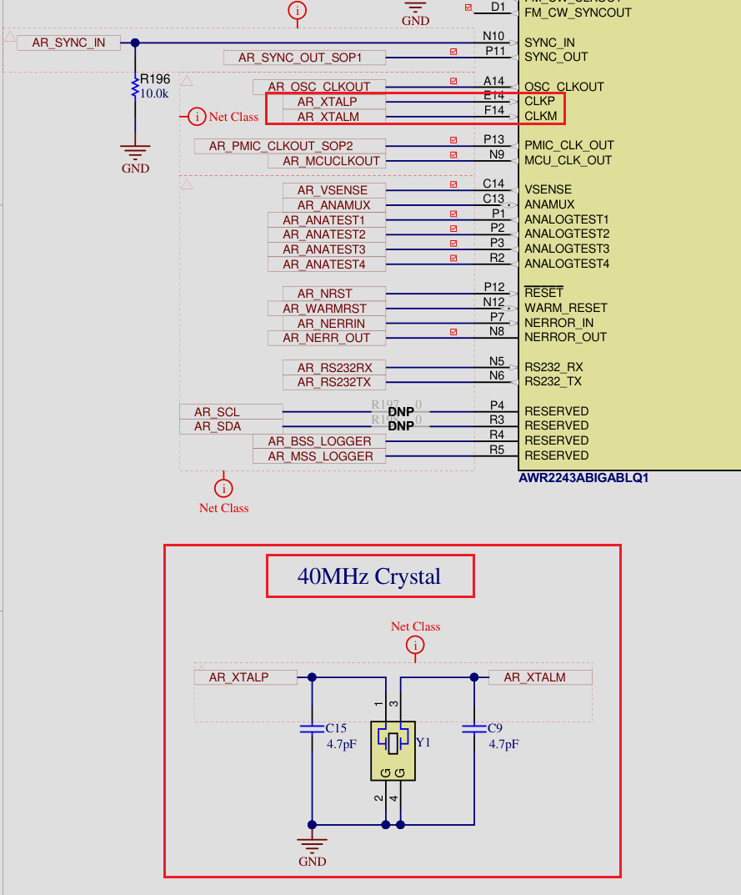

crystal
Crystal Oscillator 晶体振荡器
无源晶振
- 晶振本身并不能起振，需要借助外部振荡电路。因此在实际电路中需要IC上电正常后晶振才能起振。 此时才能测量出晶振波形。
常见晶振频率
晶振常用的频率为 4MHz ~ 50MHz
- 网络PHY常见 25MHz
- GMSL SERDES常见 25MHz
- 电子钟表常见 32.768MHz
常见无源晶振pin脚定义
无源晶振的频率pin脚不分正负极
- 两pin脚无源晶振：一个pin脚为频率输出pin脚，另外一个pin脚是频率输入pin脚。即使反过来，晶振依旧正常工作。
- 三pin脚晶振：两侧引脚为频率输出pin脚与频率输入pin脚，中间引脚接地。除了注意让这个接地pin脚去接地(GND)，两侧引脚的用法与两脚晶振无异。
- 四脚贴片无源晶振：pin 1和pin 3为频率输入引脚及频率输出引脚，其余两个pin脚均为接地引脚，即使把它旋转180度，也只是pin 1和pin 3互换位置，即输入pin脚变成了输出pin脚，而输出pin脚则变成输入pin脚，晶振依旧可以正常工作，不会导致任何性能及功能差异。
无源晶振两边加谐振电容
无源晶振的标称频率指在测试时有一个“负载电容”的条件—在晶振工作时满足这个条件， 振荡频率才可能与频率标称值一致（只有在合适的外接电容值满足无源晶振的起振要求时，晶振才能正常工作）。
无源晶振的实际输出频率并不是完全固定的，而是可以在一定范围内微调，起微调作用的就是这两个外接电容。
切记: 谐振电容一定要按照芯片参考设计来，搞错了不起振，爱因斯坦可不负责, 高尔基血的教训
AWR2243 40MHz 晶振起振后波形
